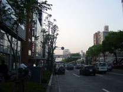
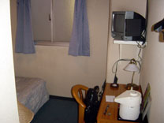
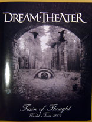
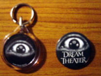
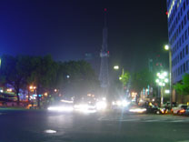

| 今日の主なイベント |
| DT名古屋公演 |
| 名古屋へ移動 |
ちょっと寝坊してしまった。
慌てて荷造り。思ったよりも荷物が膨れてしまった。
仕事を早めに切り上げて、新幹線のぞみに乗る。
品川に停車するようになってから、かなり便利になった。
17:56
あっという間に名古屋駅到着。
荷物が邪魔なので、予約しておいたビジネスホテルに一旦チェックイン。
会場に向かう。
|  |  |  |
| ホテル | こんなもんだろ | LAN対応 |
| 名古屋公演 第一部 |
19:02
ちょっと寄り道のつもりが、思ったよりも時間を食ってしまい、開場時刻の19:00を過ぎてしまった。
慌てて入場する。幸いまだ始まってはいないようだ。
ドラムセットには暗幕がまだ掛けられている。
ヨーロッパLegでは時間ピッタリに始まっていたが、さすがに開場時間が早い日本ではそうはいかないのだろう。
今日の席は1階ペトルーシ側だ。
しかし、ほぼ一番端の席なので、PAに隠れてしまって右側のスクリーンが見えない。
事前に分かっていたこととはいえ残念だ。
ステージセット・LEDスクリーンなどはヨーロッパLegと同じままのようだ。
例によってソングライティングコンテスト曲がかかっている。
場内はほぼ満席になってきた。
19:10
オーケストラ風のBGMから場内暗転～band history videoが始まった。
いつも通りのスタートだ。
さすがに海外みたいにビデオに合わせて合唱というわけにはいかないなあ。
それでも今日の客の反応はなかなか良さそう。
特に最前列あたりは頑張っている。
（名古屋でのライブは何回か経験しているが、正直反応悪い印象しかないので）
1993の時に一瞬音が乱れた。
このへんは初日だからだろうか。
ビデオの内容は全く変わっていない。
特にどのアルバムの反応がいいとかいうことはなかったかな。
そして例によってAs I Amからスタート。
マイアングのベースから始まるわけだが、今日はベースの音量が小さく、以後ほとんど聞こえなかったりする。
ざっと見た感じ各メンバーの調子は良さそうだ。
そして、ラブリエが登場。
出だしのマイクが聞こえなかったが、すぐ直った。
とりあえず調子は良さそうで、動きも軽快だ。
This Dying Soulへ。
マイキーは結構気合が入っている感じだ。
昨晩のトミーアルドリッチのたるいドラミングに比べるとやっぱりいいわ。
係員が結構ウロウロしてチェックしており、ちょっと目障りだ。
DVD用なのか、前のほうでビデオシューティングしているスタッフがいる。
いつもに比べてバックコーラスの音量が大きい。
こんなにペトルーシの声をはっきり聞きとれるのは初めてかも。
結構しっかり歌ってるんだなあ。
ここでラブリエのMC。
日本語で「アリガトー。モドッテコレテウレシイデス。」
「3時間・2セットやるぜ！」宣言に続いてBeyond This Lifeへ。
今日の客は名古屋にしてはかなり盛り上がっているのではないだろうか。
途中のimprov sectionは微妙にアレンジが変わってた気がする（自信無し）。
ペトルーシのイントロソロからHollow Years へ。
今日もLEDスクリーンはとても見易い。
ビデオ映像の構成は基本的に変えていないようだ。
それで時々演奏シーンを映すわけだが、今日はなんか違和感がある・・・
どうやら明らかに映像がワンテンポ遅れている。
特にラブリエが映っているときが顕著で、ちょっと気持ち悪いほどだ。
マラカス振る時なんてかなりズレていた。
ヨーロッパLegの時はこんなことはなかったのだが・・気付かなかっただけなのだろうか？
The Great Debateへ。
6Doitからの曲は今日はこれだけ。
Endless Sacrificeへ。
さすがに北米Lｅｇをこなしてきただけあって、前より演奏に多少余裕が感じられた。
今日のToTの曲の中では一番良い出来だったと思う。
第一部の締めはやはりFinally Freeだった。
今日は気のせいかマイキーの映像が多目の気がする。
20:40
第一部終了。例によって15分休憩が表示される。
今日は初日ということもあり、一番ベーシックなセットリストだった。
各メンバーの調子は良好なので、二部が楽しみだ。
| 名古屋公演 第二部 |
マーチャン売り場へ買出し。
Ｔシャツ3種は購入済みのものと多分同じもの。
各3500円なので、ちょっとだけ安く買えたかな。
ヨーロッパLegでは売っていなかったグッズを購入。
・ツアーパンフ 2000円
・キーチェーン 1000円
・バッジ 500円
|  |  |
| ツアーパンフ | キーチェーン＆バッジ |
残り1分になっても今日はまだ客電が付いている。
というか、最後の1分は明らかに長かった。
21:00
第二部スタート。
注目の1曲目は・・Metropolis Part1のイントロが流れてきた。
さすがに人気が高く、歓声があがる。
しかし、ここでメトポリだとアンコールはACOSなのか？
中盤のベースパートでマイマングがアップになると、歓声があがる。
海外ではありそうでない反応で、日本でのマイアングの人気の高さが伺える。
間髪入れずに続くのはなんとA Fortune In Liesだ！
ヨーロッパLegで見ていない曲なのでメチャ嬉しい。
しかも意外なことにちゃんとビデオ映像も用意されていて、お金を数えるシーンなどが使われていた。
ラブリエversionを生で聴くのは初めてだったかな？
やっぱりドミニシよりラブリエだと改めて実感。
大阪で1st完全再現の可能性もあるが、どうなるのだろうか。
続いてThe Mirrorへ。
よく見えなかったのだが、マイキーのスティックキャッチで沸いていた。
久しぶりにラブリエのタンバリンも拝めました。
そしてAnother Dayへ。
今日のラブリエは素晴らしい。
北米Legでは調子を落とした日もあった感じだが、ちゃんと体調を整えてきてくれたみたい。
何度聞いても感動的だなあ。
次のこのイントロは・・Vacantじゃないか。
これまであまり演奏されてないはずで、初めて聴くことができた。
ただ元々ちょっと耳休めという感じの曲なので、印象は薄い。
ペトルーシはまだ今一つしっくりしていない感じ。マイキーはお休み。
CDの流れ通りにStream of Consciousnessへと続く。
評価が分かれやすい曲だが、客の反応は上々だったと思う。
このままIn The Name Of The Godへと続くかと思いきや、意表をついてPull Me Underだ。
ToTツアーは大作が多いだけに、サビを歌える曲はやはり必要だ。
特別なアレンジはなく、ノーマルヴァージョンで本編終了。
ラブリエの「ドモアリガト！GoodNight!」の挨拶とともに一旦ステージを去る。
アンコールはIn The Name of The Godだ。
この曲が外れることは無さそうなので、必然的にこうなる。
マイキーが手を左右にスイングするように煽るのだが、今一つ揃わないのが残念。
ポルトの観客はそれはそれは見事に揃っていたんだけど・・
また、テロ関係の映像が使われていたけど、これはヨーロッパLegの時には無かったはず。
ラブリエは疲れを見せることなく、最後まで歌いきっていた。
22:10
最後の挨拶の時に見たこと無い人がいるなあと思ったら、どうやら素人外人が紛れ込んだようで摘み出されてた。
全員で礼をして終了。
昨晩のブルーマーダーは流れ解散だったけど、やっぱり礼くらいしたほうが締まる。
計3時間のショーだったが、あっという間だった。
あまり期待していなかった名古屋公演だが、今日の第二部は結構おいしかったので満足。
ヨーロッパLegで見ていない曲を3曲もやるとは思わなかった。
とにかく全員調子が良さそうなので、明日以降がまた楽しみだ！
| band history video (intro tape) As I Am This Dying Soul Beyond This Life (w/ extended improv section) Hollow Years The Great Debate Endless Sacrifice Finally Free ~~~intermission~~~ Metropolis Part1 A Fortune In Lies The Mirror Another Day Vacant Stream of Consciousness Pull Me Under ~~~encore~~~ In The Name of The God |
| ホテルへ |
会場の外には特にバッタモノとかは売っていなかった。
腹が減ったので、とりあえず栄に移動。
|  |
| テレビ塔 |
遅い夕食を食べてホテルに戻る。
無事LAN接続出来たので、ホームページ更新。
寝る。